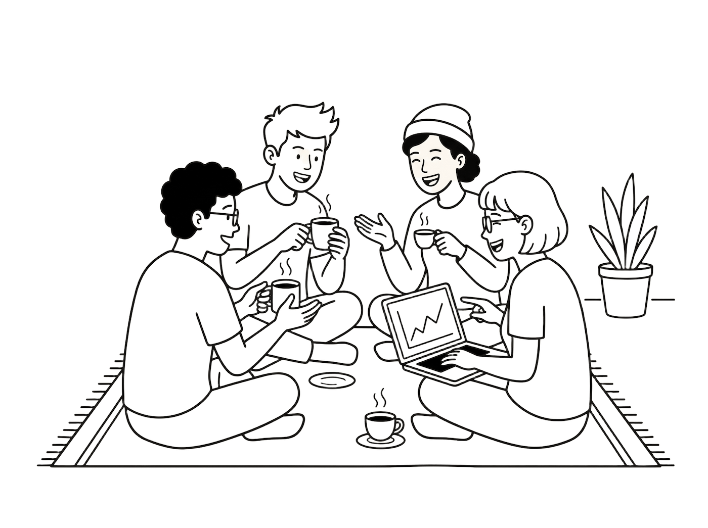

Nggak usah pusing sama sintaks atau ngetik kode dari nol. Di Ngopai, kita bahas cara bikin web dan aplikasi semudah mengobrol bareng sambil ngopi.

100% Gratis. Tempat diskusi & belajar bareng.
Panduan praktis untuk bikin aplikasi pakai AI.
Racikan prompt rahasia, trik hemat kuota, dan sebagainya.
Update info tools AI terbaru, tips, dan rekomendasi yang lagi hits.
Yuk, gabung bareng teman-teman lain yang udah duluan bikin aplikasi sambil santai.
☕ Masuk Sekarang →